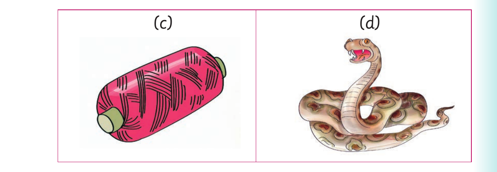
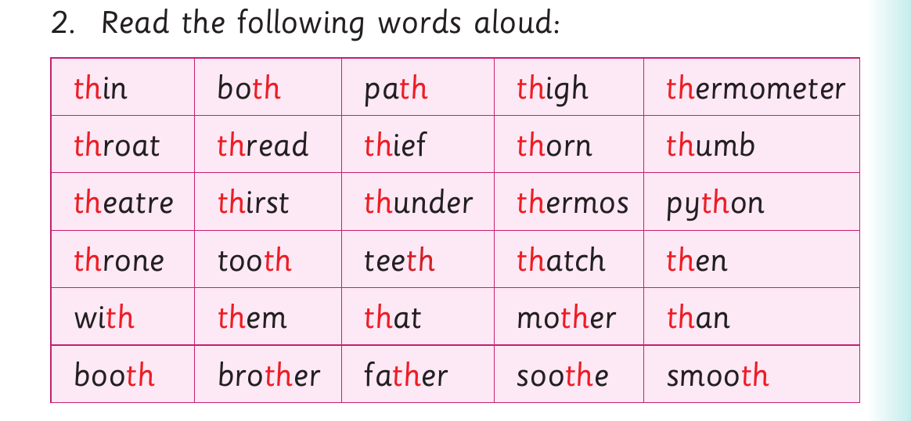

Words with letter sound th - continued

(c) (d)

2. Read the following words aloud: th in bo th pa th th igh th ermometer th roat th read th ief th orn th umb th eatre th irst th under th ermos py th on th rone too th tee th th atch th en wi th th em th at mo th er th an boo th bro th er fa th er soo th e smoo th
Activity 2
Read the following sentences aloud: (a) My father bought me these shoes. (b) The top of the table must be smooth. (c) The interpreter sits in a booth. (d) She came to the party with her brother. (e) A mother will know how to soothe a baby.